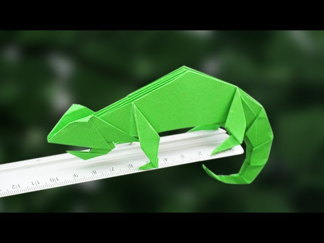
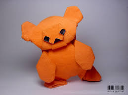

<!DOCTYPE html>
<html lang="en"></html>
<head>
<title> Origami Designs</title>
<link rel="stylesheet" type="text/css" href="style.css">
</head>

<body> 
    <div>
        <div class= "menu">
            <div> <a href ="#"> </a></div>
            <div> Origami Designs</div>
            <div> <a href ="about.html">About Us </a></div>
        </div>
    </div>

    <div class="bodyimg">
        
        <p>
        Original Instructions and Diagrams
        </p>
        <h3><br> 
        Step by Step diagrams are probably the most popular and easiest to follow way to show to show how to fold things out of paper
        Trying to find good origami instructions on the Internet can be a lot of work though. To help your research we've put
        together the largest database of free origami diagrams anywhere on the internet.
        </h3>
    </div>


    <div class ="grid">
        <div class="origami">
            <center>
            <a href = "http://origami.me/camel/"></a>
            <h3> Camel </h3>
            </center>
            <p> 
                <ol>
                    <li> Camel's ears are furry</li>
                    <li> Camel can move easily across the sand because of its specially designed feet</li>
                    <li> When they find water, they will drink as much as possible</li>
                </ol>
            </p>
        </div>
        <div class= "origami">
            <center>
            <a href= "http://origami.me/chameleon/"></a>
            <h3> Chameleons</h3>
            </center>
            <p>
                <ul>
                    <li> Chameleons are reptiles that are part of the iguana suborder</li>
                    <li> Changing skin color is an important part of commiunication among chameleons</li>
                    <li> Most chameleons have a prehensile tail that they use to wrap around tree branches</li>
                </ul>
            </p>
        </div>

        <div class= "origami">
            <center>
            <a href= "http://origami.me/pigeon"></a>
            <h3> Pigeons</h3>
            </center>
            <p>
                <ul>
                    <li>Pigeons are incredibly complex and intelligent animals</li> 
                    <li> Pigeons are renowned for their outstanding navigational abilities</li> 
                    <li> Pigeons are highly sociable animals</li> 
                </ul>
            </p>
        </div>

        <div class= "origami">
            <center>
            <a href= "http://origami.me/teddybear"></a>
            <h3> Teddybear</h3>
            </center>
            <p>
                <ul>
                    <li>
                        The teddy was named after President Theodore Roosevelt, after he refused to shoot a bear during a 1902 hunting trip</li> 
                    <li> Inspired by a cartoon featuring the event, shopkeeper Morris Michtom and his wife Rose made a stuffed bear with a sign 'Teddy's bear' and left it in their shop window ,It gained so much attention that they started a successful toy making company.</li> 
                    <li> A teddy has been into space! Magellan T Bear boarded Space Shuttle Discovery in 1995 as part of a school project.</li>                  </li> 
                </ul>
            </p>
        </div>

        <div class= "origami">
            <center>
            <a href= "http://origami.me/panda"></a>
            <h3> Panda</h3>
            </center>
            <p>
                <ul>
                    <li>    They spend a lot of their day eating</li> 
                    <li>   Bamboo is critical to their diet</li> 
                    <li>   But they do occasionally eat something other than bamboo.</li>
                </ul>
            </p>
        </div>
        
        <div class= "origami">
            <center>
            <a href= "http://origami.me/flying-cicada"></a>
            <h3> flying-cicada</h3>
            </center>
            <p>
                <ul>
                    <li>  There are around 3,000 cicada species</li> 
                    <li>   Cicadas can be black, brown or green and can have red, white or blue eyes</li> 
                    <li>   Their wings are transparent and can seem rainbow-hued when held up to a light source.</li>
                </ul>
            </p>
        </div>
       
      
      


    </div>


</body>
